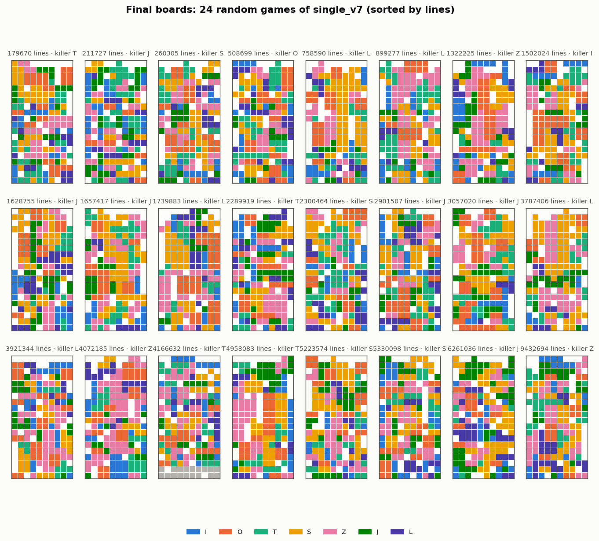
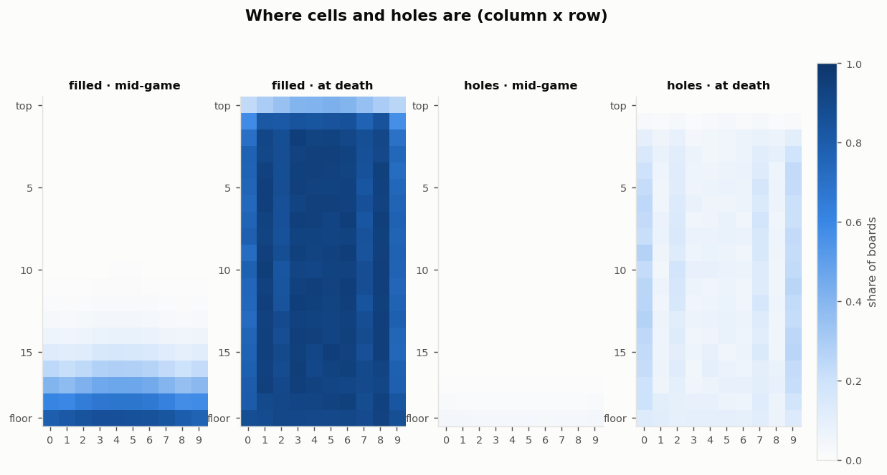
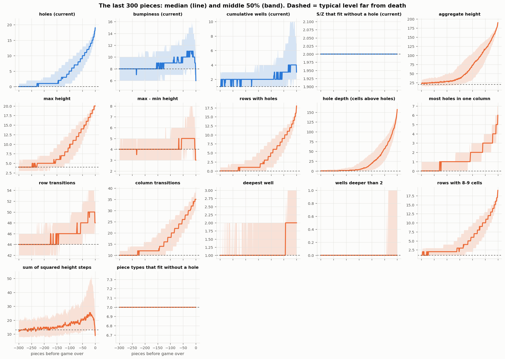
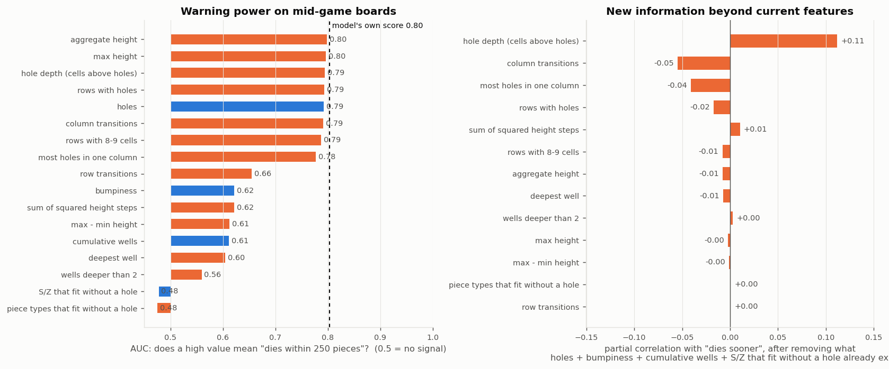
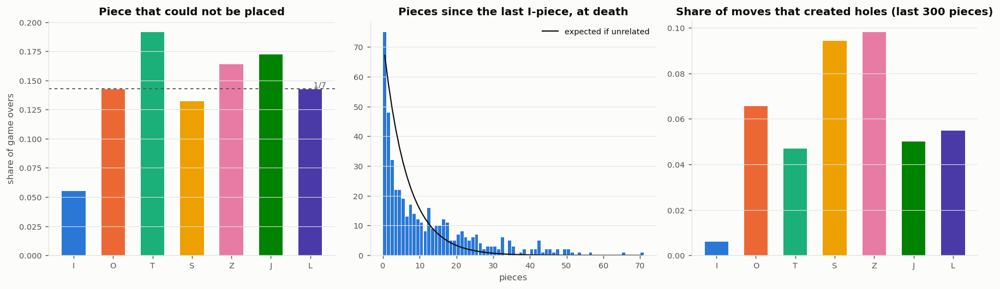
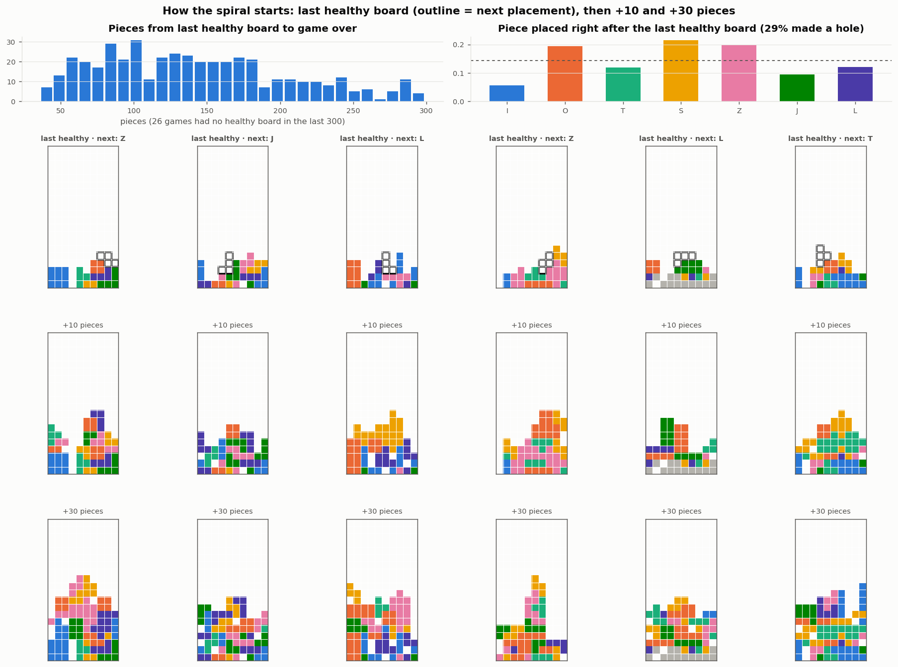

500 games (470 game overs), mean 3993850 lines, median 2635946. 420620 mid-game snapshots; "dies soon" = within 250 pieces.
| feature | median mid-game | median at death | AUC (warning) | added info (partial corr.) | leaves normal range at |
|---|---|---|---|---|---|
| aggregate height | 20 | 190 | 0.80 | -0.01 | -137 |
| max height | 4 | 20 | 0.80 | -0.00 | -119 |
| hole depth (cells above holes) | 0 | 157 | 0.79 | +0.11 | -138 |
| rows with holes | 0 | 18 | 0.79 | -0.02 | -131 |
| holes current | 0 | 19 | 0.79 | -133 | |
| column transitions | 10 | 35 | 0.79 | -0.05 | -125 |
| rows with 8-9 cells | 1 | 19 | 0.79 | -0.01 | -135 |
| most holes in one column | 0 | 6 | 0.78 | -0.04 | -108 |
| row transitions | 44 | 48 | 0.66 | +0.00 | -28 |
| bumpiness current | 8 | 6 | 0.62 | ||
| sum of squared height steps | 13 | 9 | 0.62 | +0.01 | |
| max - min height | 4 | 3 | 0.61 | -0.00 | |
| cumulative wells current | 1 | 3 | 0.61 | ||
| deepest well | 1 | 2 | 0.60 | -0.01 | |
| wells deeper than 2 | 0 | 0 | 0.56 | +0.00 | |
| S/Z that fit without a hole current | 2 | 2 | 0.48 | ||
| piece types that fit without a hole | 7 | 7 | 0.48 | +0.00 |
AUC of the model's own board score: 0.80. "Leaves normal range" = the piece (before death) where the median first exceeds the 90th percentile of boards far from death. "Mid-game" = snapshots at least 1000 pieces before death; current features: holes, bumpiness, cumulative wells, S/Z that fit without a hole.
The board at the moment no piece placement was possible. Colors show which piece filled each cell.

Share of boards with a filled cell / hole at each position, mid-game snapshots vs final boards.

How each feature evolves over the last 300 placements. Blue = features the model already uses, orange = candidates.

Computed on 420620 mid-game snapshots (1189 within 250 pieces of death). Left: each feature alone. Right: what a candidate adds once the current features are accounted for.

Left: the killer piece vs. the 1/7 you would expect by chance. Middle: I-piece drought at death vs. chance. Right: how often each piece type adds a hole without clearing a line, in the run-up to death.

"Healthy" = holes <= 1 and aggregate height <= 31 (75th percentile of boards far from death). Each column follows one game from its last healthy board.
